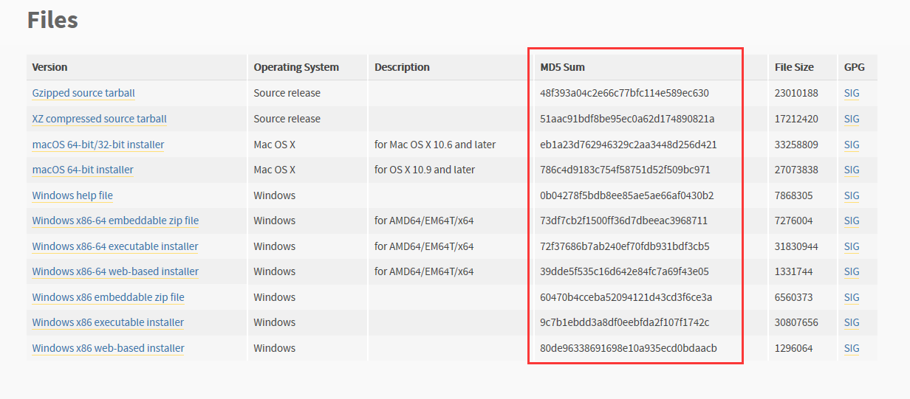

json文件相当于编程界的普通话，是各种语言交互的枢纽，当数据需要在多种语言间传输，就必须将数据转换成json字符串，对方将接受到的json字符串再转换成对应语言的数据类型，完美还原
json模块方法介绍：
| json.dumps() | 将对象序列化 |
|---|---|
| json.loads() | 将对象反序列化 |
| json.dump() | 将对象序列化写入文件 |
| json.load() | 将对象读取后反序列化 |
dumps、loads：用于网络传输dump、load：用于文件写读json.dumps()
dumps(obj, *, skipkeys=False, ensure_ascii=True, check_circular=True, allow_nan=True, cls=None, indent=None, separators=None, default=None, sort_keys=False, **kw)ensure_ascii：若对象中出现的非ascii字符（如中文）时会被转换，若显示原字符，指定ensure_ascii=Falseimport json
print(json.dumps(["张旭东666"]))
print(json.dumps(["张旭东666"], ensure_ascii=False))
运行结果：
["\u5f20\u65ed\u4e1c666"]
["张旭东666"]json.loads()
loads(s, *, encoding=None, cls=None, object_hook=None, parse_float=None, parse_int=None, parse_constant=None, object_pairs_hook=None, **kw)import json
print(json.loads("[1,2,3,4]"))
print(type(json.loads("[1,2,3,4]")))
运行结果：
[1, 2, 3, 4]
<class 'list'>json.dump()
dump(obj, fp, *, skipkeys=False, ensure_ascii=True, check_circular=True, allow_nan=True, cls=None, indent=None, separators=None, default=None, sort_keys=False, **kw)import json
with open("text.txt", "w", encoding="utf-8") as f:
json.dump([1, 2, 3, 4], f)json.load()
load(fp, *, cls=None, object_hook=None, parse_float=None, parse_int=None, parse_constant=None, object_pairs_hook=None, **kw)with open("text.txt", encoding="utf-8") as f:
lst = json.load(f)
print(lst)
print(type(lst))
运行结果：
[1, 2, 3, 4]
<class 'list'>如果向文件中写入多个json串，无法读取，因为在文件中写入的都是一行内容
import json
lst = [{"k1": 1}, {"k2": 2}, {"k3": 3}] # 准备好放在一起
with open("text.txt", "w+", encoding="utf-8") as f:
json.dump(lst, f) # 一起写入
f.seek(0)
for el in json.load(f): # 一起读取
print(el)
运行结果：
{'k1': 1}
{'k2': 2}
{'k3': 3}dumps和loads对每一行分别进行处理import json
lst = [{"k1": 1}, {"k2": 2}, {"k3": 3}]
with open("text.txt", "w+", encoding="utf-8") as f:
for el in lst:
f.write(json.dumps(el)+"\n") # 利用write和dumps一行一行序列化写入
f.seek(0)
for line in f:
print(json.loads(line)) # 一行一行读取反序列化
运行结果：
{'k1': 1}
{'k2': 2}
{'k3': 3}pickle模块将所有数据类型和对象序列化转换成bytes类型（不支持lambda匿名函数），还可以反序列化还原回原数据，pickle模块只能在python语言中使用，其他语言不识别
pickle模块支持多行序列化写入和多行读取反序列化功能
pickle模块方法介绍：
| pickle.dumps() | 将对象序列化 |
|---|---|
| pickle.loads() | 将对象反序列化 |
| pickle.dump() | 将对象序列化写入文件 |
| pickle.load() | 将对象读取后反序列化 |
dumps、loads：用于网络传输dump、load：用于文件写读hashlib模块被人称为加密算法、摘要算法等，它的功能是用来对数据进行加密和文件校验使用，通过模块中的功能函数将数据转换为一个固定长度的字符串
数据转换流程：
hashlib模块的特点：
import hashlib
sha1 = hashlib.sha1()
sha1.update("21".encode("utf-8")) # 将21转换为密文
print(sha1.hexdigest())
sha1 = hashlib.sha1()
sha1.update("12".encode("utf-8")) # 将12转换为密文
print(sha1.hexdigest())
运行结果： # 结果一定不同，且无规律
472b07b9fcf2c2451e8781e944bf5f77cd8457c8
7b52009b64fd0a2a49e6d8a939753077792b0554import hashlib
sha1 = hashlib.sha1()
sha1.update("12".encode("gbk")) # 用gbk进行编码
print(sha1.hexdigest())
sha1 = hashlib.sha1()
sha1.update("12".encode("utf-8")) # 用utf-8进行编码
print(sha1.hexdigest())
运行结果： # 内容相同，无论编码方式是什么，密文一定相同，
7b52009b64fd0a2a49e6d8a939753077792b0554
7b52009b64fd0a2a49e6d8a939753077792b0554加密方式：
模块应用一：对数据进行加密
方法介绍：
| hashlib.md5() | 对应加密方式初始化 |
|---|---|
| obj.update() | 向初始化的对象中添加要加密的内容，内容必须是字节码 |
| obj.hexdigest() | 对对象进行加密 |
普通加密：
import hashlib
md5 = hashlib.md5() # 初始化使用md5加密方式的对象
md5.update("zxd666".encode("utf-8")) # 向对象添加要加密的内容，内容必须为字节码
print(md5.hexdigest()) # 进行加密
运行结果：
fe02a10cda698ceb5a03022189199c49 # 相同明文，密文一定相同
加盐加密：
import hashlib
md5 = hashlib.md5("盐".encode("utf-8")) # 在初始化时可以对要加密的明文进行固定加盐，盐也需要转换为字节码
md5.update("zxd666".encode("utf-8"))
print(md5.hexdigest())
运行结果：
2bc9ae4e838be80068a6e4963626b92c # 相同明文，密文一定相同
import hashlib
user = input("账号:")
pwd = input("密码:")
md5 = hashlib.md5(user.encode("utf-8")) # 利用账号来给密码加盐，每个人的账号都不同，起到了动态加盐的效果
md5.update(pwd.encode("utf-8"))
print(md5.hexdigest())
运行结果：
账号:zxd
密码:zxd123
ddca7a4709d99ac8d1b3012b2e6a364a
obj.update()方法可以多次添加需要加密的内容
import hashlib
md5 = hashlib.md5()
md5.update("zxd".encode("utf-8"))
md5.update("666".encode("utf-8")) # 可以分开多次添加
print(md5.hexdigest())
运行结果：
fe02a10cda698ceb5a03022189199c49 # 与上面例子中普通加密的密文相同
模块应用二：用于文件一致性校验

文件校验实例：
import hashlib
def file_check(file_path):
with open(file_path,mode='rb') as f1:
sha256 = hashlib.md5()
while 1:
content = f1.read(1024)
if content:
sha256.update(content)
else:
return sha256.hexdigest()
print(file_check('python-3.6.8-amd64.exe'))
之前提到过的官方判断可迭代对象和迭代器的方法：Iterable、Iterator
from collections import Iterable, Iterator
lst = [1,2,3,4,5]
l_iter = iter(lst)
print(isinstance(lst, Iterable))
print(isinstance(l_iter, Iterator))
运行结果：
True
True
Counter类（统计）
from collections import Counter
lst = [1, 2, 6, 2, 4, 4, 6, 2, 4, 5, 4, 4, 2, 3, 2, 1]
print(dict(Counter(lst)))
运行结果：
{1: 2, 2: 5, 6: 2, 4: 5, 5: 1, 3: 1}
from collections import Counter
lst = [1, 2, 6, 2, 4, 4, 6, 2, 4, 5, 4, 4, 2, 3, 2, 1]
print(list(Counter(lst)))
运行结果：
[1, 2, 6, 4, 5, 3]
deque类（双向队列）
from collections import deque
q = deque()
q.append(3)
q.append(4)
q.appendleft(2)
q.appendleft(1)
print(list(q))
print(q.pop())
print(q.popleft())
print(list(q))
运行结果：
[1, 2, 3, 4]
4
1
[2, 3]
OrderedDict类（有序字典）
from collections import OrderedDict
dic = {"k1": 1, "k2": 2, "k3": 3}
print(dic)
od = OrderedDict({"k1": 1, "k2": 2, "k3": 3})
print(od)
print(od["k1"])
运行结果：
{'k1': 1, 'k2': 2, 'k3': 3}
OrderedDict([('k1', 1), ('k2', 2), ('k3', 3)]) # 位置固定
1 # 可以像正常字典取值
defaultdict类（默认字典）
from collections import defaultdict
df = defaultdicr(list)
print(df["k1"])
运行结果：
[]
namedtuple类（命名元组）
from collections import namedtuple
nt = namedtuple("num", ["x", "y"]) # 定义元组名、元素名(其实这里是创建了一个类)
p = nt(1, 2)
print(p)
print(p.x)
print(p.y)
运行结果：
num(x=1, y=2)
1
2
软件开发规范：分文件管理，增强耦合性
| bin | 启动文件目录 |
|---|---|
| lib | 公共组件目录 |
| core | 主逻辑目录 |
| db | 相关数据目录 |
| log | 日志 |
| conf | 配置文件目录 |